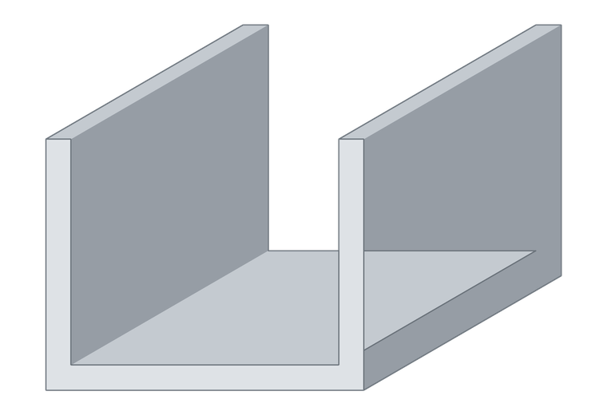

Perfiles U de alas desiguales
Cuando una de las dos caras necesita más superficie de apoyo o de fijación que la otra.

Perfiles U de alas desiguales
¿Necesitás una medida que no está en la tabla? Trabajamos con siete extrusores: si existe en el país, lo conseguimos.
Medidas disponibles
52 medidas en stock y a pedido, en milímetros. Tocá Ver para abrir la medida.
| Ancho | Alto | Espesor | |
|---|---|---|---|
| 7 | 9 | 1,7 | Ver |
| 9,25 | 40 | 1,5 | Ver |
| 9,5 | 25 | 1,5 | Ver |
| 10 | 13 | 1,5 | Ver |
| 10 | 20 | 1,5 | Ver |
| 11 | 17 | 1,2 | Ver |
| 11 | 17 | 1,5 | Ver |
| 11 | 19 | 1,3 | Ver |
| 11,1 | 22 | 1,2 | Ver |
| 11,5 | 25 | 1,4 | Ver |
| 12 | 8 | 1 | Ver |
| 12 | 21,8 | 1,2 | Ver |
| 12 | 22,22 | 1,05 | Ver |
| 12 | 26 | 1,2 | Ver |
| 12,2 | 12 | 1,2 | Ver |
| 12,6 | 7,7 | 1,2 | Ver |
| 14 | 25 | 1,2 | Ver |
| 14 | 25 | 1,5 | Ver |
| 14 | 26,4 | 2 | Ver |
| 15 | 25 | 1,5 | Ver |
| 15 | 28 | 1,2 | Ver |
| 15 | 40 | 1,3 | Ver |
| 15 | 40 | 1,5 | Ver |
| 15 | 40 | 1,7 | Ver |
| 15 | 40 | 1,75 | Ver |
| 15 | 40 | 2 | Ver |
| 16,1 | 13 | 1,6 | Ver |
| 19 | 15 | 1,5 | Ver |
| 19,3 | 25,4 | 1,5 | Ver |
| 19,3 | 26 | 2 | Ver |
| 20 | 10 | 1,5 | Ver |
| 21,8 | 12 | 1,3 | Ver |
| 22 | 20 | 1,5 | Ver |
| 23 | 11 | 1,5 | Ver |
| 24,7 | 9 | 1,6 | Ver |
| 25,5 | 19 | 2 | Ver |
| 25,9 | 25,4 | 1,5 | Ver |
| 29,5 | 12,2 | 1,6 | Ver |
| 31,5 | 12,5 | 1,5 | Ver |
| 32,5 | 12 | 2 | Ver |
| 38 | 30 | 1,5 | Ver |
| 40,3 | 15 | 1,5 | Ver |
| 45 | 15 | 1,5 | Ver |
| 50 | 6,5 | 2 | Ver |
| 50 | 15 | 2 | Ver |
| 50 | 18 | 1,5 | Ver |
| 53,3 | 20 | 2 | Ver |
| 54,5 | 20 | 2 | Ver |
| 61,7 | 41 | 5,5 | Ver |
| 67,5 | 40 | 2,5 | Ver |
| 90 | 30 | 5 | Ver |
| 101,6 | 50,6 | 4 | Ver |
Preguntas frecuentes
¿Cuántas medidas hay disponibles?
52 medidas de perfiles u de alas desiguales, consolidadas de todos nuestros proveedores en un solo catálogo. Si no ves la que necesitás, escribinos: puede estar disponible a pedido.
¿En qué largo se venden?
El largo estándar es de 6 metros. Algunas medidas se entregan en 3 metros, y también cortamos a medida.
¿Qué aleación es?
Aluminio 6063, la aleación estándar para perfilería. Para aplicaciones que necesiten otra aleación o temple, consultanos.
¿Lo cortan a medida?
Sí. Deciles el largo que necesitás y cuántas piezas, y te pasamos el precio con el corte incluido.